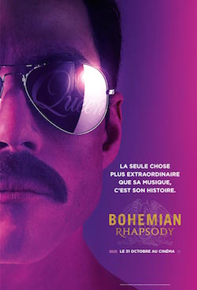
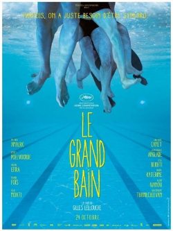
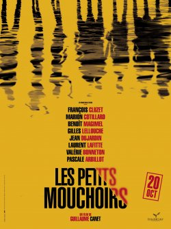

Meryl Delpech
Entrepreneur
After 2 years working in Corporate Finance, I lauched Roller Girl Hôtesses and lauch a new project in the Event industry thanks to Le Wagon
See for yourself
After 2 years working in Corporate Finance, I lauched Roller Girl Hôtesses and lauch a new project in the Event industry thanks to Le Wagon
See for yourself|  |
Bohemian RhapsodyBohemian Rhapsody est un film biographique britannico-américain coproduit et réalisé par Bryan Singer, sorti en 2018. Il s’agit du portrait du chanteur de rock britannique Freddie Mercury et de son groupe Queen. |
|  |
Le Grand BainLe Grand Bain est une comédie dramatique française coécrite et réalisée par Gilles Lellouche, sortie en 2018 |
|  |
Les Petits MouchoirsA la suite d'un événement bouleversant, une bande de copains décide, malgré tout, de partir en vacances au bord de la mer comme chaque année. Leur amitié, leurs certitudes, leur culpabilité, leurs amours en seront ébranlées. Ils vont enfin devoir lever les petits mouchoirs qu'ils ont posés sur leurs secrets et leurs mensonges. |
Facebook
LinkedIn
Instagram